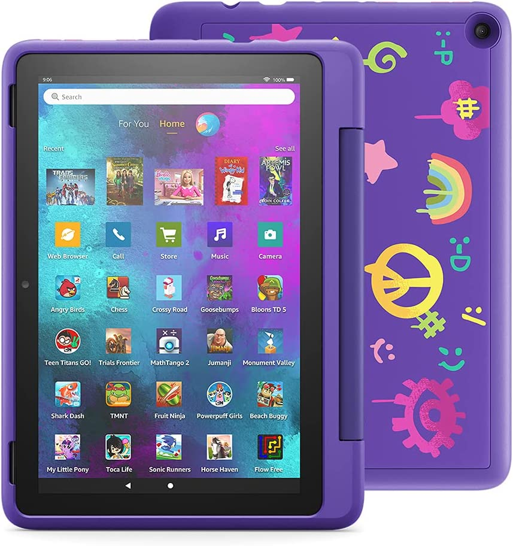
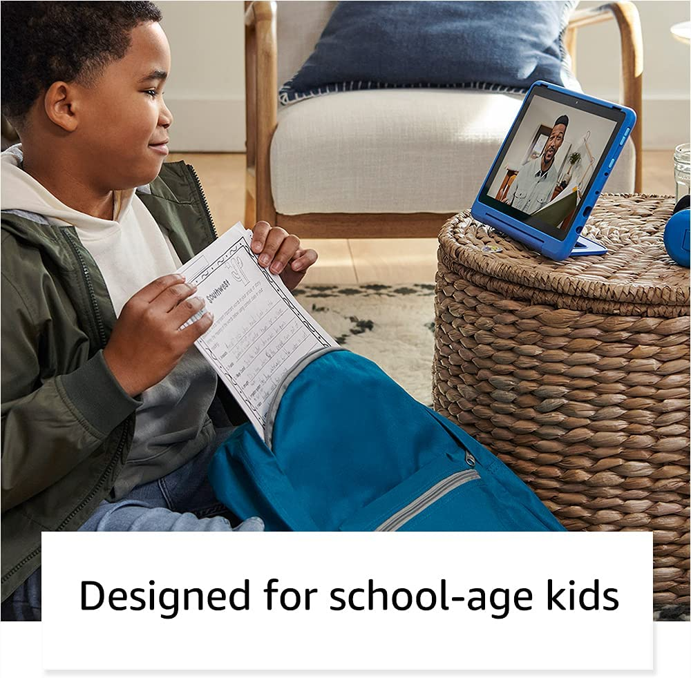

If you’re in the market for a new tablet for your child, the Amazon Fire HD 10 Kids Pro is the easy pick. Starting at $200, it's the cheapest tablet on this list, and unlike more adult-oriented fare, it comes with an included “kid-proof” case and a two-year warranty. Amazon says if your kid breaks the tablet, the company will replace it for free.

Other useful add-ins include a free one-year subscription to Amazon Kids+, which unlocks more than 20,000 games, books and apps designed for children. There’s also a handy dashboard for parents that allows you to set time limits, content filters and educational goals. And even though its 3GB of RAM and 32GB of base storage aren’t much, its 1080p display is plenty sharp and it has a microSD card slot for expandable storage. And if you want a slightly smaller and more affordable option, there’s the $140 Fire HD 8 Kids Pro too.